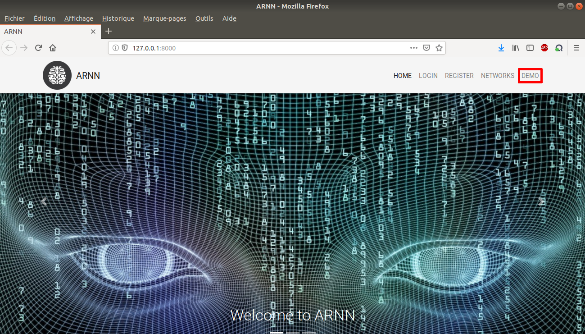

First and foremost, the server has to be launched before accessing this page. Open a terminal to the root location (/Code/Django/recurView) of the project and type python3 manage.py runserver. It may not work if migrations need be carried out, thus type python3 manage.py makemigrations then python3 manage.py migrate before. Once the server is running, a link towards the Web page (http://127.0.0.1:8000/ by default) must be appear in your terminal. Click on the URL to access the homepage.
A demo for visitors is also available by clicking on the area highlighted in red.
« Requirements :: Contents :: Register »